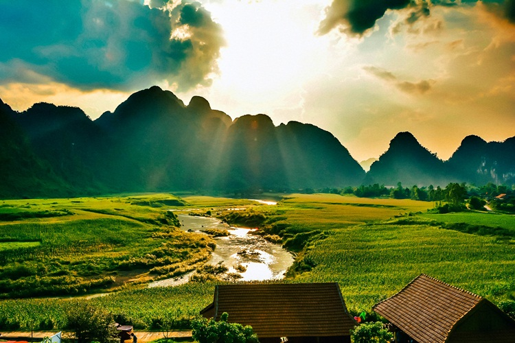
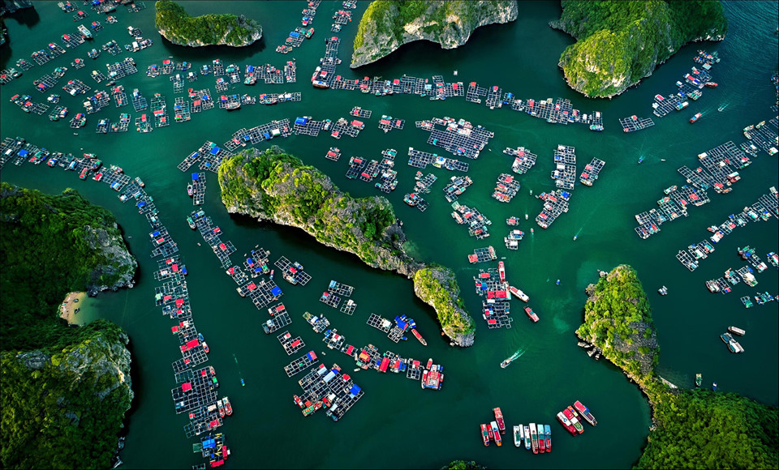
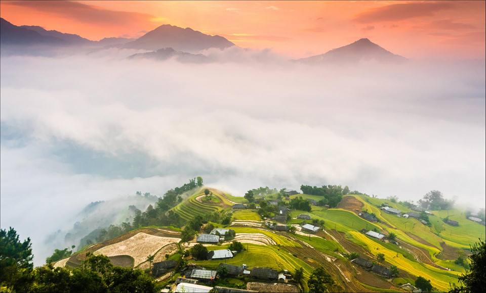
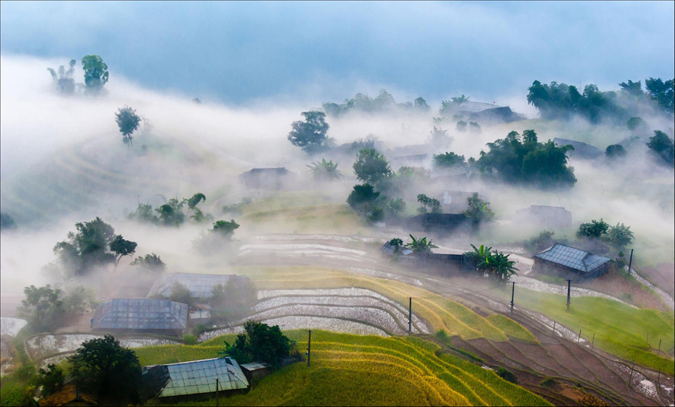
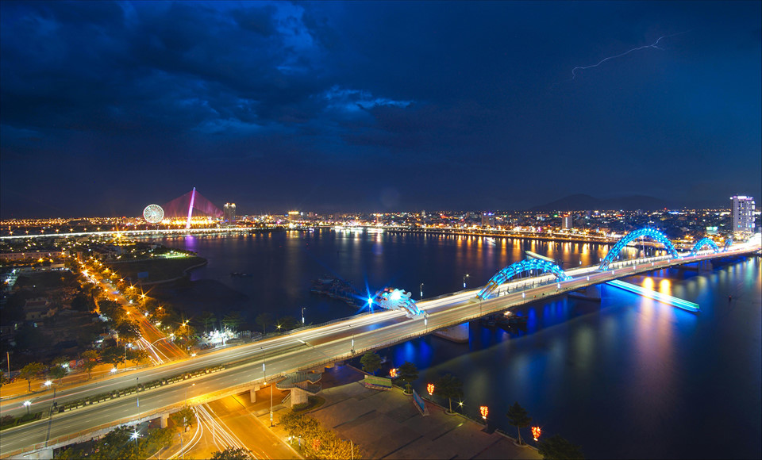
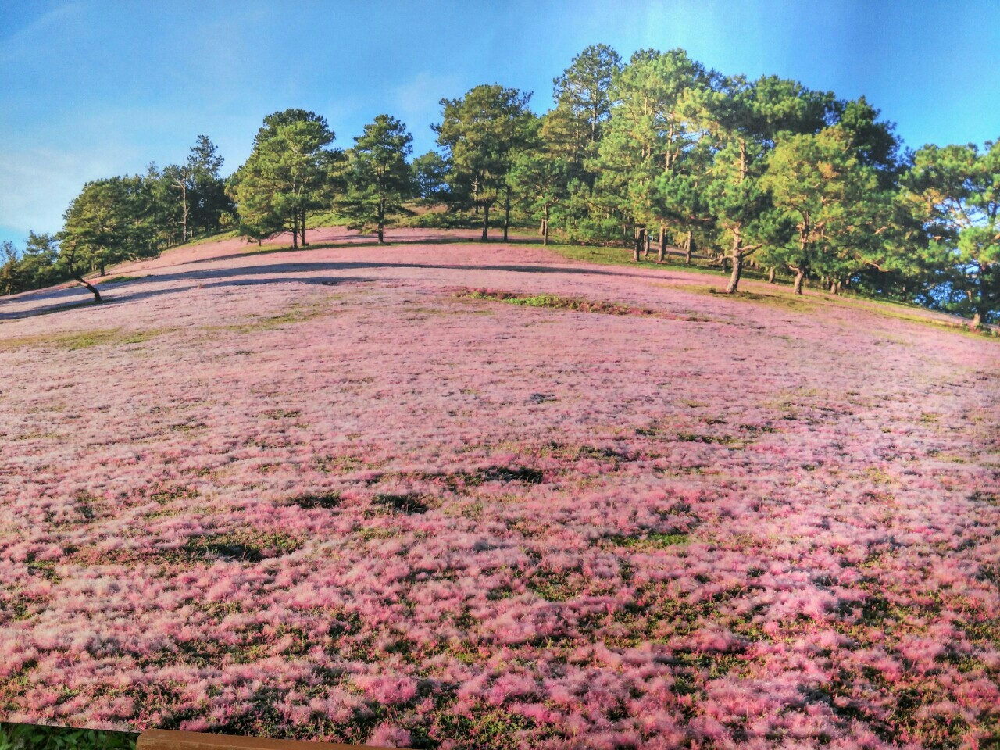

Welcome to our Albume
Vẻ đẹp thiên nhiên của Tú Làn ngay lập tức chạm đến tâm hồn của Jordan Vogt-Roberts – người đã rong ruổi khắp mọi nơi trên thế giới tìm kiếm những cảnh quay bất hủ. Và ông không ngần ngại cho bộ phim thứ 7 về King Kong - một nhân vật quái thú mang tính biểu tượng của lịch sử điện ảnh – thoát ra khỏi bối cảnh quen thuộc là tòa nhà chọc trời ở New York.
Hàng trăm ngôi nhà nổi trên vịnh, giữa những dãy núi đá vôi tạo nên cảnh quan tuyệt đẹp. Đây là phần nối liền giữa vịnh Lan Hạ và vịnh Hạ Long, địa danh đã được bình chọn là kỳ quan thiên nhiên thế giới.
Một cung đường ở Sơn La. "Mỗi khi thấy dáng hình chữ S, trong tôi lại trào dâng cảm xúc về quê hương đất nước tươi đẹp. Tôi mong muốn cho quê hương thanh bình và no ấm, khát khao cho Tổ quốc tôi mãi hòa bình", tác giả Đức Thành chia sẻ.
Bản Phùng ở Hoàng Su Phì (Hà Giang). "Tôi ấn tượng bởi trong một buổi sớm mai đã chứng kiến được khung cảnh đẹp đẽ của bản Phùng, thức giấc với lúa vàng đang độ thu hoạch. Mây như ôm ấp bản làng, phía chân trời hừng lên một bình minh tươi sáng.
Cầu Rồng (Đà Nẵng) trong một đêm giông. Đây là cây cầu thứ 6 bắc qua sông Hàn, dài 666 m, rộng 37,5 m, 6 làn xe chạy, hoạt động từ tháng 3/2013, kinh phí xây cầu gần 1,5 nghìn tỷ đồng.
Mùa nào thức nấy, mùa hoa cải trắng tinh khôi, mùa hoa dã quỳ vàng rực, mùa hoa phượng tím… Nhưng không thể không nhắc đến loài cỏ hồng – loài cỏ dại mọc thấp nằm e ấp dưới các tán rừng thông đắm mình trong sương sớm níu chân biết bao người lữ khách.
